TASK
I need to create all screens necessary to withdrawing $60 from a standard Chase ATM by using either a card or a phone, but not both.
PROBLEM
The biggest challenges are to figure out how the phone should interact with the ATM machine as function as a card, and decide what screens should go on the phone or the ATM machine to make the processes smooth and intuitive.
FINAL PRODUCTS
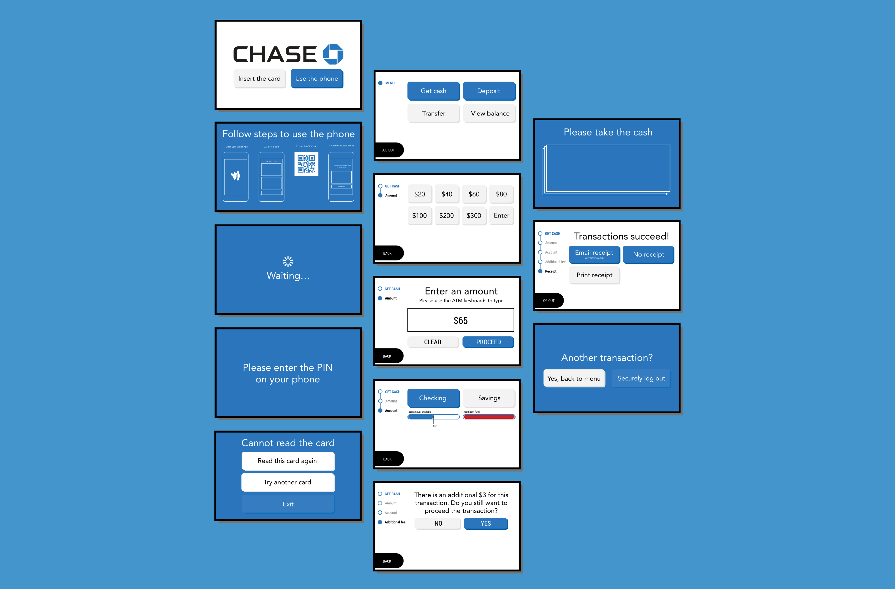 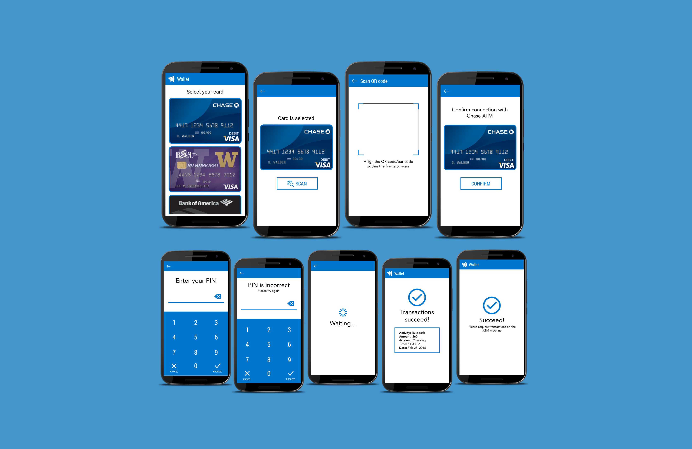INITIAL MINDMAP
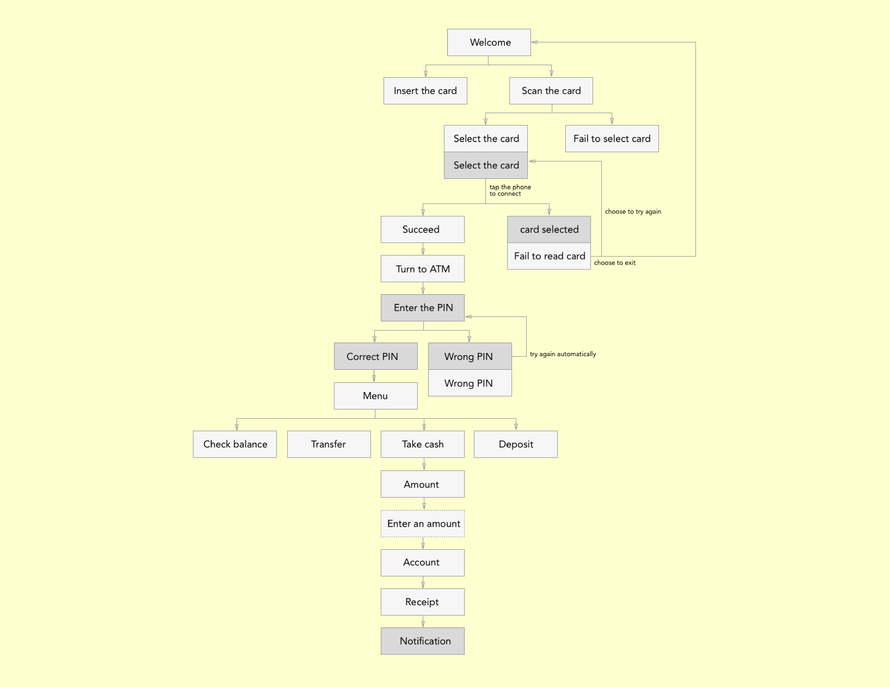Note: The darker gray means phone screen; the lighter gray means ATM screen.
FLOW TEST
Objective
The test was mainly used to decide if the flow in the initial process map was smooth and intuitive.
Method
To make sure I had enough time to go through multiple iterations, I drew paper prototype and switch screens manually for the initial testing.
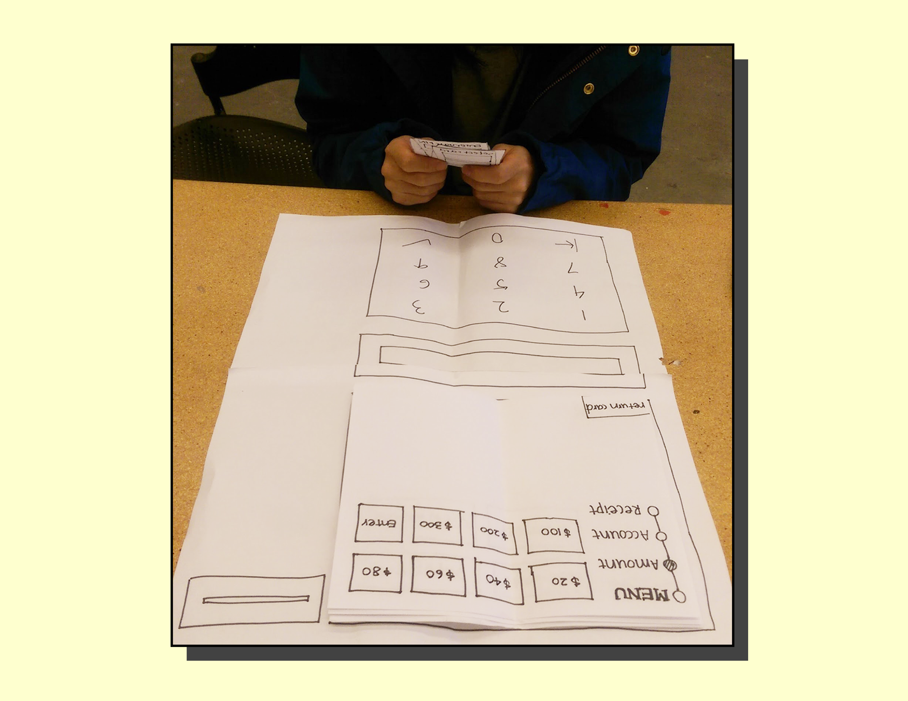Results
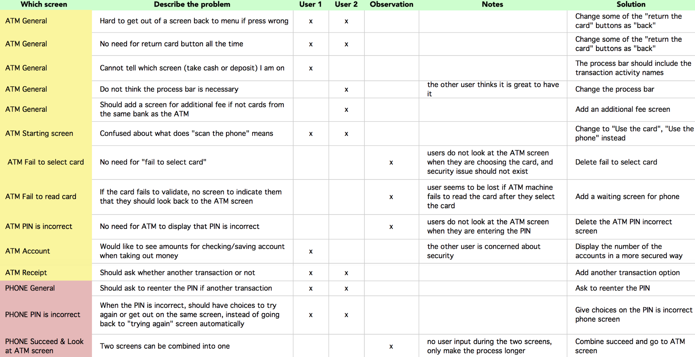Findings
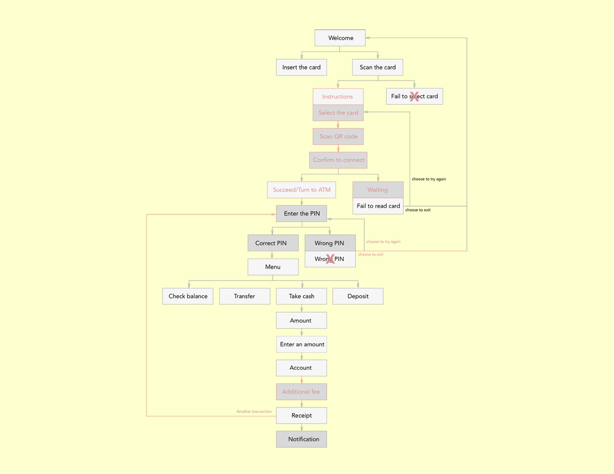There were also screen design issues discovered as below:
■ Confused about what “scan the phone” means
■ The process bar on the left is confusing
■ Show balance for accounts in a secure way
FLOW + DESIGN TEST
Objective
I transferred my paper prototype onto screen. This test was mainly used to determine whether the changes I made on the digital screen helped the interface to be more effective and intuitive.
Method
To simplify the testing process, I still use paper prototype but this time interfaces are printed instead of drew to get higher fidelity.
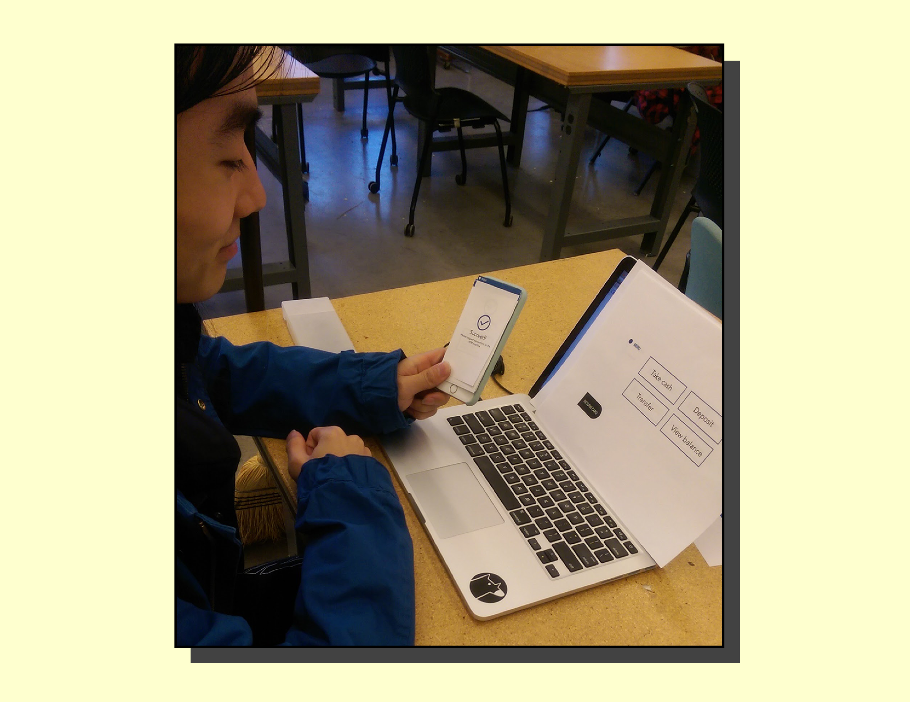Results
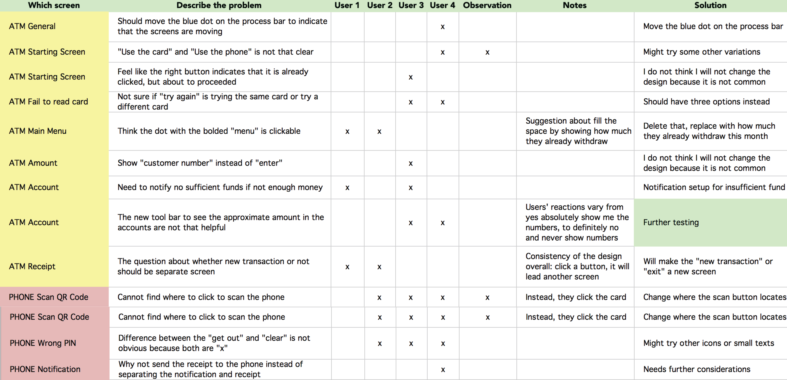Findings
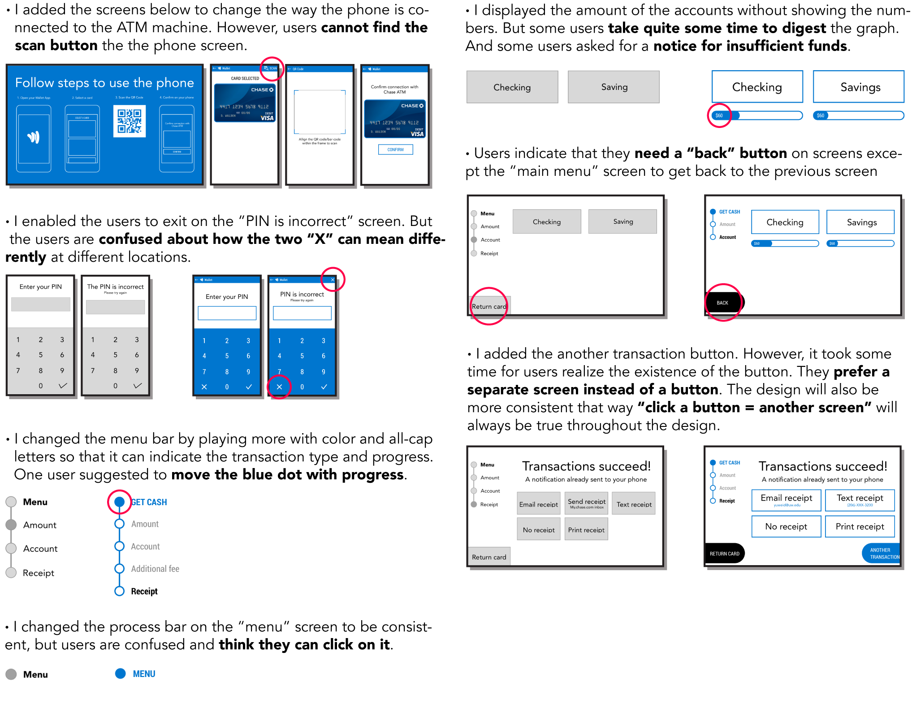DESIGN TEST
Objective
At this moment, the flow is pretty much decided. I am testing mainly the screen interface designs.
Method
For this test, I used a laptap and a phone to test the prototypes to mimic the real interaction between the ATM machine and phone.
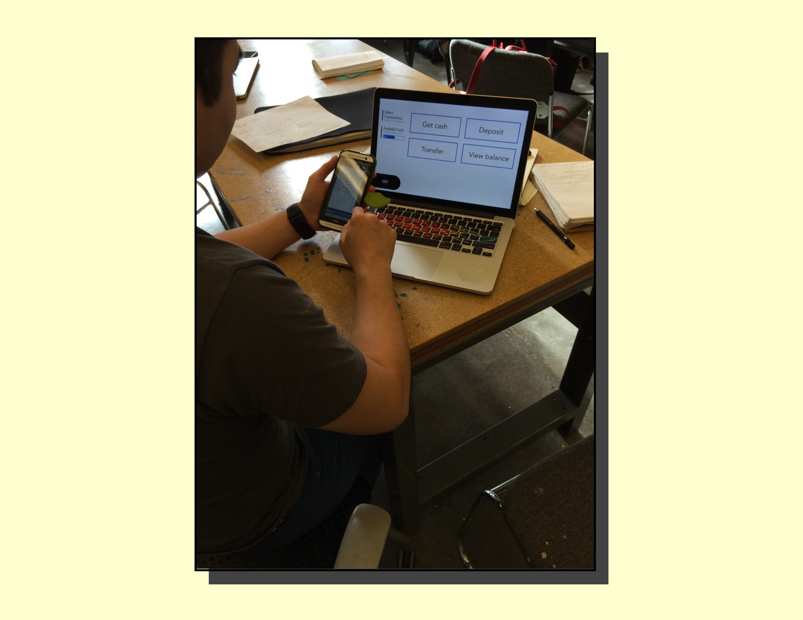Findings
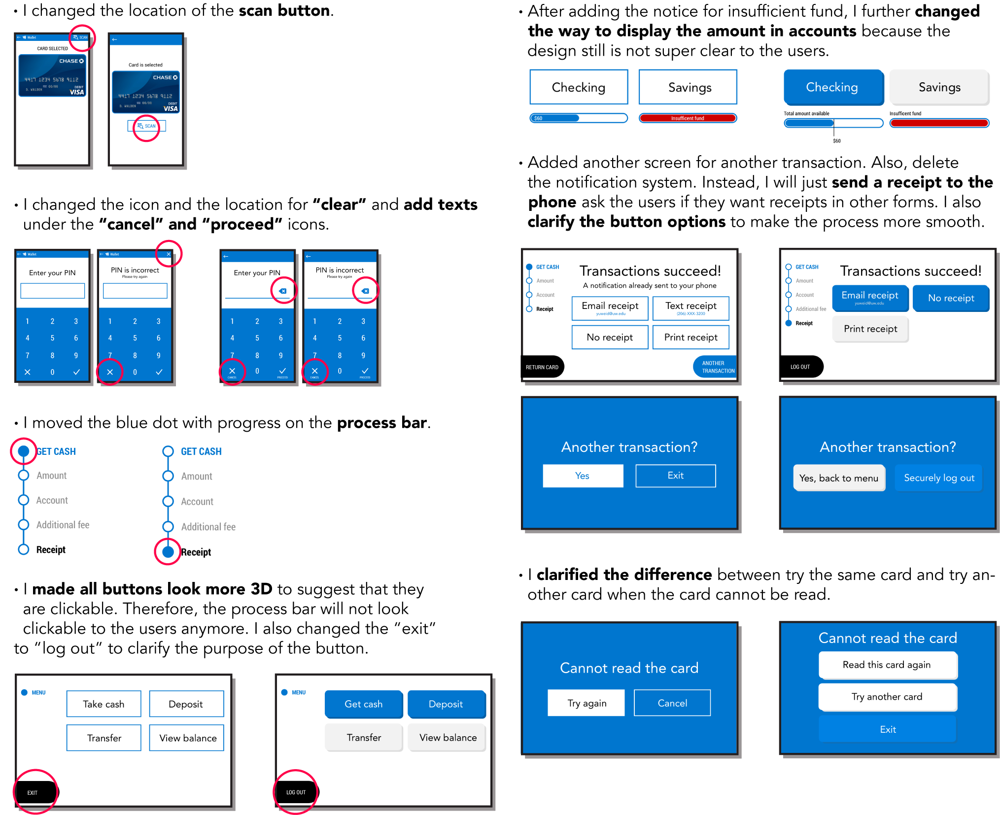FINAL THOUGHTS
What I learned
■ The different fidelity level prototypes really speeds up the interation cycles.
■ Complete test kit can prompt the users to give more feedbacks.
■ The focus of the tests should change at different stages of design.
What can be improved
■ Moving forward, I would experiment more on what to include on the left side of the main menu.
■ I would like to talk to Chase bank about why they make certain decisions on their design of the ATM screens in regards of policies of the bank. For example, whether to send a notification or send a receipt directly to the phone can be tricky when bank policy gets involved.